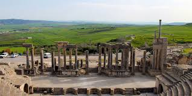

Site archéologique de Dougga (Thugga)
Classé au patrimoine mondial de l'UNESCO, Dougga est le site romain le mieux préservé d'Afrique du Nord. Avec son théâtre antique, son Capitole majestueux, ses temples et ses thermes, c'est un joyau archéologique exceptionnel qui témoigne de la grandeur de la civilisation romaine.